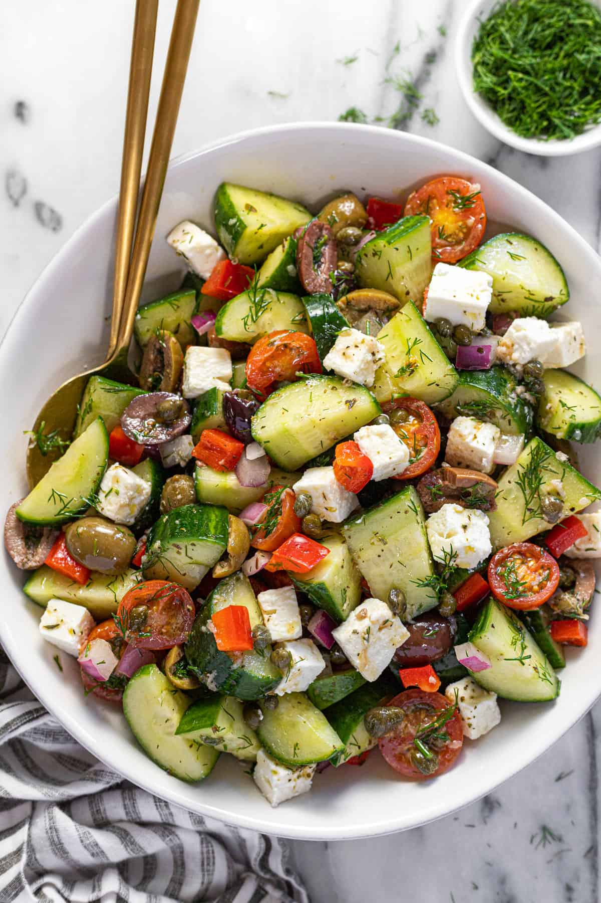

Cucumber Salad

Ingredients
- 2 large cucumbers, thinly sliced
- 1/2 red onion, thinly sliced
- 1/4 cup fresh dill, chopped
- 1/4 cup sour cream or Greek yogurt
- 1 tbsp olive oil
- 1 tbsp white vinegar or lemon juice
- 1 tsp sugar (optional)
- Salt and black pepper, to taste
Instructions
- Prepare the vegetables: Thinly slice the cucumbers and red onion. Add them to a large bowl.
- Make the dressing: In a small bowl, whisk together sour cream (or Greek yogurt), olive oil, vinegar or lemon juice, sugar, salt, and pepper.
- Combine: Pour the dressing over the cucumbers and onions. Add the chopped dill and toss gently to coat.
- Chill: Refrigerate for at least 20–30 minutes to let the flavors blend.
- Serve: Enjoy cold as a refreshing side dish.